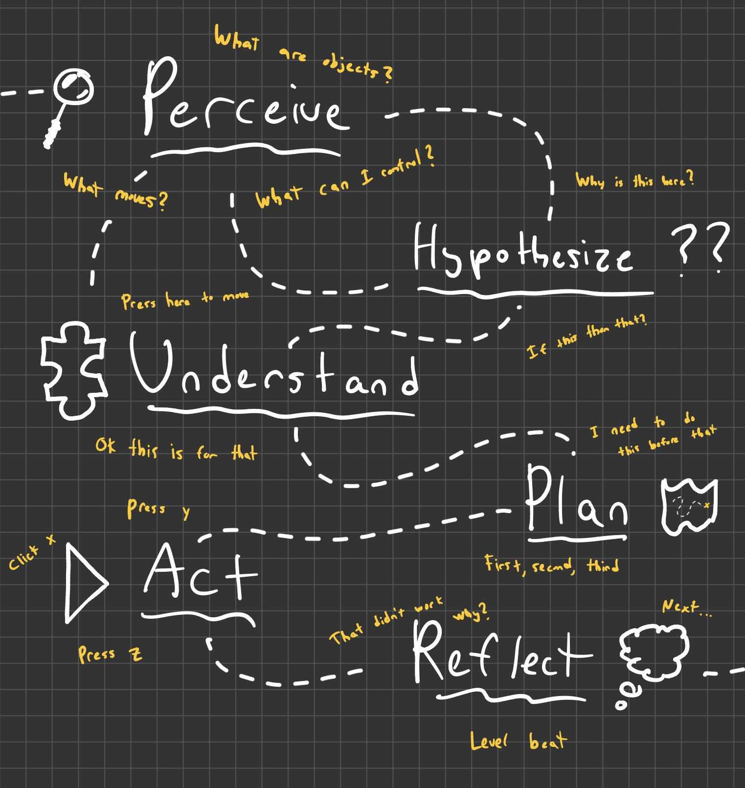

What ARC-AGI-3 is
ARC — the Abstraction and Reasoning Corpus, from François Chollet — tests fluid intelligence: solving problems you've never seen before, not recalling facts you memorised. ARC-AGI-3 is the interactive version — an agent is dropped into an unfamiliar grid mini-game with no instructions and has to work out the rules by acting.
People figure it out almost every time. Today's best AI models solve under 1%.
How it's scored
You're graded on efficiency vs a real person — not just whether you finish.
Finish a level in as few moves as a human and you approach 100. Take more, you fall off fast — it's squared. Don't finish the level at all, and you score nothing for it.
The scale is brutal: the best public AI (~1.21) and a human (~100) differ by ~80×. Drawn linearly so the gap stays honest — the tiny bars are the point. This is an unsolved frontier, and everyone is near the start line.
My solution
LLMs today interpret MRIs better than doctors, crack proofs that stump experts, and surface zero-day bugs that went unnoticed for years. Drop one into a simple game with novel-but-intuitive mechanics, though, and it struggles with — well — intuition. That gap is what ARC-AGI-3 measures, and I've been fascinated by it since February.
I think the key is reasoning like a human. The model can already reason — the bottleneck is the flow of information. Hand it clean, well-worded facts about a scene and it does fine; make it gather those facts itself across a hundred noisy frames and it drowns.
So I sat down and solved the games myself, and tried to pin down how I actually did it — how do I know what I control? how do I read walls or place-specific mechanics? how do I derive a goal, and adapt when things don't match what I expected? The loop is my attempt to give the model those same steps, over and over.

Replay theater
Real episodes from the latest run. Click through the highlighted moments — I've annotated what matters at each one so you don't have to read every frame. The grid is re-derived ground truth (the real engine frames); the reasoning shown is the loop's own words.
—
—
the agent's raw reasoning at this exact frame ▾
—
—
Where the flow still breaks
Each failure mode is a fact that didn't route cleanly — and it shows up as a shape. Below, the controllable object's actual path across the board (re-derived from the saved frames, not the model's claims), tinted by the judge's live verdict. Three episodes, three unmistakable signatures.
The loop closes the gap and the judge confirms it's moving the right object the right way — then it overshoots and swings back and forth (28 TOWARD / 24 AWAY), never landing the exact alignment. The trace buzzes across the target instead of settling.
Clean step-by-step navigation reasoning — but the executor presses RIGHT twenty-one times and re-probes the same tiny corridor, never taking the untried downward path toward the goal. The path collapses into a knot: the frontier fact never reaches the planner.
Correct goal. Correct target. But the plan says moving up with
button 4 will advance the group
— and button 4 goes
right. The reasoning is sound; a fact got corrupted between
perception and language, and the whole plan follows it off a cliff.
Not a reasoning failure — a routing failure.
→ Next: tighten the perception-to-language handoff so direction facts survive the trip, and give the planner the untried-frontier fact it's currently blind to.